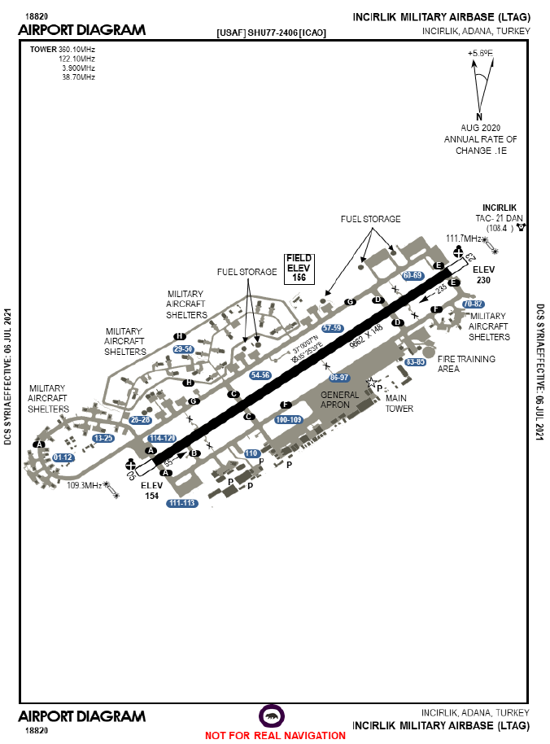

WP 0: Arranque, Taxi y Despegue
1. CHECKLIST: PRE-ARRANQUE
Apunta aqui la información X
COMMS: SOLICITUD DE ARRANQUE
PILOTO: "Andersen Ground, Cigar-1, en plataforma con información November, solicitamos autorización para arranque"
GROUND: "Cigar-1, AUTORIZACION"
PILOTO: "Copiado, Cigar-1"
COMMS: SOLICITUD DE RODAJE
PILOTO: "Andersen, Cigar-1, X aviones listos, solicitamos instrucciones de rodaje"
GROUND: "Cigar-1, INSTRUCCIONES DE RODAJE"
PILOTO: "Copiado, Cigar-1"
2. RODAJE (TAXI)
Ruta ejemplo: Tu plataforma → Taxiway Alfa → EOR de pista 05
Que hacer: Localizar tu plataforma en la carta → Identificar ruta por taxi Alfa hasta llegar a espera 06R → Parar en EOR y completar armado de armas

*Vigilar tráfico en taxiway. Mantener formación de 4 aviones a distancia segura.
3. PROCEDIMIENTO EOR (End Of Runway)
Armado de Armas:
- Pines Misiles/Bombas/JDAM: RETIRADOS
- Sistemas de Armas: COLD
- IFF: ACTIVO
- Datalink: ACTIVO
- Superficies de control: MÓVILES
- Combustible: MÁXIMO
- Gear: DOWN (3 verdes)
COMMS: EOR
CAMBIAMOS A FRECUENCIA DE EOR AL LLEGAR
PILOTO: "GROUND, Cigar-1, en espera en EOR"
GROUND: "Cigar-1, copiado en EOR, pines retirados, sistemas en COLD, listo comunique a torre"
PILOTO: "Copiado, Cigar-1, pines retirados, sistemas en COLD, listo para comunicar a torre"
4. DESPEGUE
PILOTO: "TOWER, Cigar-1, en espera en EOR, listo para despegue"
TOWER: "Cigar-1, copiado en EOR, autorizado para despegue en pista 05, viento 087 a 6 nudos"
PILOTO: "Copiado, Cigar-1, autorizado para despegue en pista 05"
(Al despegar)
PILOTO: "TOWER, Cigar-1, Vuelo Cigar-1 en el aire"
TOWER: "Cigar-1, copiado, notifique en punto Falcon FL50"
PILOTO: "Copiado, Cigar-1"
(Al llegar al punto Falcon)
PILOTO: "TOWER, Cigar-1, alcanzando punto Falcon a FL50"
TOWER: "Cigar-1, copiado en punto Falcon, autorizado a cambiar a frecuencia Departure"

SALIDA FALCON: Despegamos y nos dirigimos al punto falcon en el radial 070º ascendiendo a FL50 (o el indicado por torre). Al llegar al punto falcon, reportamos a torre y cambiamos a frecuencia táctica para continuar con el paquete de ataque.
Debemos estar en el radial 070º a FL50 antes de llegar al punto falcon, que se encuentra a 10nm del TCN. Tras eso pasamos a departure (camino desde FALCON a WP1)